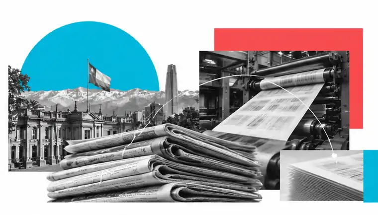
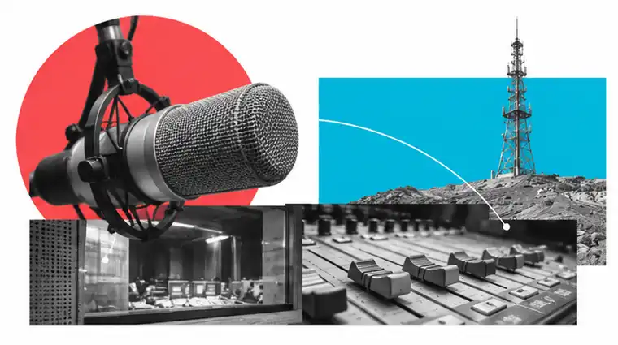

01
Contenido intacto
No inventar, resumir ni eliminar textos, cifras o datos. En presentaciones, el diseño cambia; la información permanece.
Un lenguaje visual. Infinitas aplicaciones.
Una skill de diseño para transformar instrucciones en collages, presentaciones y piezas editoriales que mantienen la identidad de Feedback, sin alterar la información original.
Descarga gratuita · Dos versiones · Leer las instrucciones ↗

No inventar, resumir ni eliminar textos, cifras o datos. En presentaciones, el diseño cambia; la información permanece.
Recortes precisos, fotografía en blanco y negro, formas geométricas y enfoque en detalles, manos y personas de espaldas.
Composiciones asimétricas, grandes espacios blancos, energía visual medida y una jerarquía tipográfica reconocible.
Chile y sus territorios con referencias comprobables. Las imágenes sintéticas nunca se presentan como fotos documentales.
Recursos editoriales sin personas, sin titulares ficticios y sin textos dentro de las composiciones. Prensa, audio y canales digitales, en el lenguaje visual Feedback.


Una caja de herramientas flexible para que cada pieza se vea distinta, pero pertenezca al mismo sistema.
La vista web utiliza fuentes de reemplazo. El skill especifica las tipografías originales; no redistribuye archivos comerciales.
Una misma identidad, distintas formas de mostrar información. Elige el gráfico según lo que necesitas comunicar.
SISTEMA FEEDBACK / SEIS FORMAS DE VISUALIZAR
Comparar magnitudes entre categorías.
01 / 06Úsalo para comparar categorías en un mismo período: regiones, marcas, resultados o segmentos.
Mantén una base cero en barras convencionales, escala uniforme, orden claro y etiquetas legibles. Destaca solo la categoría relevante con coral.
No cortes el eje de valores ni uses 3D. Evita barras decorativas que distorsionen las proporciones.
Aplica Feedback Design Skill. Convierte mis datos en un gráfico de barras editable. Conserva categorías, cifras, unidades, orden y fuente. Usa eje desde cero, retícula limpia, Akzidenz-Grotesk Pro y un acento coral para el dato destacado. No inventes valores.
Regla Feedback. El diseño cambia; los datos no. Se conservan valores, unidades, fechas, categorías y fuentes. Las muestras anteriores son ejemplos de estilo con datos simulados.
El mismo principio editorial, aplicado a diferentes formatos. Selecciona un tipo para generar una instrucción de ejemplo.
Un punto de partida, listo para copiar y personalizar.
La identidad gráfica Feedback, sus referencias y las reglas de fidelidad editorial, preparadas para usar en ChatGPT o Claude.
En Claude.ai: Personalizar → Skills → + → Crear skill → Subir un skill. En Claude Code: colocar la carpeta feedback-design en .claude/skills/. Ver instalación completa ↗
Obtén la carpeta feedback-design en tu computador.
Agrega SKILL.md y la carpeta de referencias a tu asistente o proyecto compatible.
Solicita: «Aplica Feedback Design Skill» y adjunta los archivos originales cuando existan.
Revisa contenido, tipografías, fuentes de imagen y editabilidad antes de publicar.